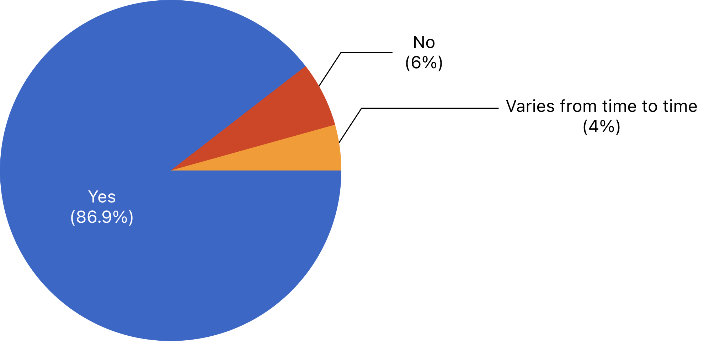
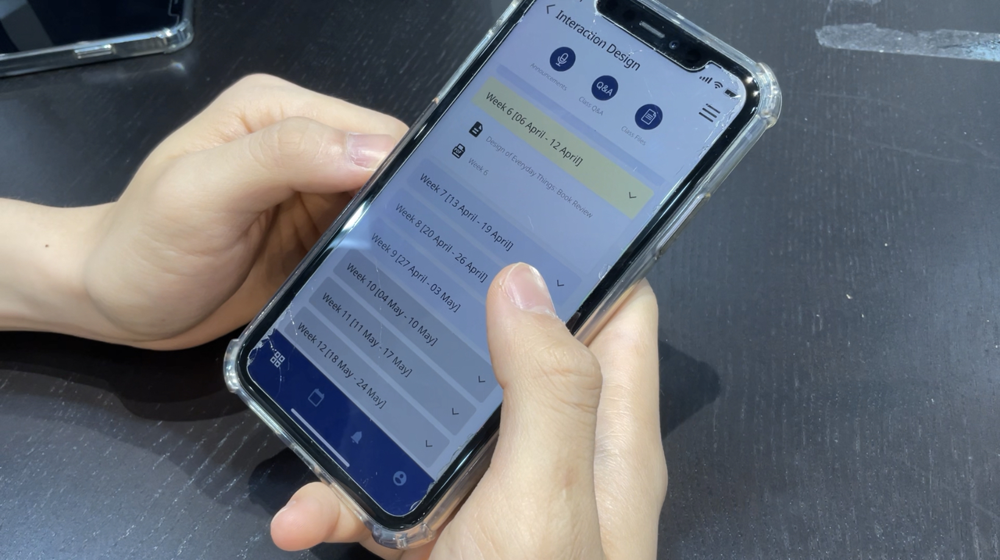

This project was conducted as a part of Introduction to Interaction Design class. The project had the purpose of exploring problem areas within the Yonsei International Campus located at Songdo and devising a redesign solution to the problem. I teamed up with three classmates to investigate the problems of laundry rooms and provide a design solution that incorporates the physical space and digital technology.
Summary
01: BACKGROUND
02: PROBLEM
The women’s laundry room located in Dorm G had critical issues that led to an unpleasant and inefficient laundry room experience.
There was a lack of dryers compared to the number of washers, causing students to line up by putting their laundry baskets on the floor, which led to problems such as cutting in line.
Laundry cards could only be charged through cash and detergent dispensers only accepted coins, causing the inconvenience of having to carry cash every time.
Students waiting in line had to pull out other’s laundry if they were late and the laundry was usually put in random baskets on the floor, causing problems such as the lack of hygiene and the frequent loss of laundry.
There wasn’t a proper place to sit or rest while waiting for the laundry to be done.
The lack of English descriptions made it difficult for foreigners to go through the laundry process.
03: MISSION STATEMENT
“Make laundry process efficient and improve students’ waiting time”
04: SOLUTION OVERVIEW

Dashboard
The dashboard page displays a color-coded course list for easier differentiation. A short-cut to the timetable is provided for convenience.
Calendar & To-Do
The calendar page visually shows the academic schedule in one look and enables users to add their own schedule. The To-do List Page automatically adds to-dos with functions of adding and editing.


My Page
In my page, users can customize colors for courses, view the timetable, and check attendance.
Notifications
The notifications page has been revised so that the notifications do not disappear upon checking but are left checked.

Empathize
05: SURVEY
Through a survey conducted for five days, we collected a total of 100 responses from students who have experience of using the self-laundry room. The questions were mainly focusing on habits and complaints regarding the usage of the self-laundry room. We also included open-ended questions to get detailed opinions regarding the laundry room. The following are important findings from the survey.
i. A redesigned space should guarantee a 1:1 ratio of dryers and washers.
When we asked respondents if they use dryers after washing, 86.9% of respondents answered that they use dryers, and 4% answered that it varies from time to time. However, the current laundry room had 16 washers and 7 dryers, which was significantly out of balance. This led to the problem of long, unorganized lines in front of dryers. Through the survey, we learned that a 1:1 ratio of dryers and washers is needed in the redesigned laundry room.

ii. There were many tardy users because users did not keep track of time.
Since users have to calculate the time for washing and drying themselves, many users did not arrive on time to fetch their laundry. Respondents complained that such tardy users hold up the line, especially for dryers.
iii. The laundry room environment is not suitable for waiting.
37% of respondents answered that they wait for their laundry in the laundry room. However, they complained that there aren’t enough seats and desks, and the existing ones are uncomfortable.

06: IN-DEPTH INTERVIEW
In-depth interviews were conducted with one heavy user and one first-time user to observe how each type uses the laundry room. The interview and observation was conducted for three hours, from putting laundry into the washers to finishing the drying process, and questions were asked during the waiting time.
i. The first-time user shared her first impressions on using the laundry room system.
First, even though she was Korean, she found it difficult to follow the instructions of the laundry process.
Second, she was confused about how to line up for dryers. The culture of putting baskets for waiting in line was unfamiliar to a first-time user.
Third, she said she would rather go to her own room while waiting – the laundry room was not really a comfortable place or atmosphere for relaxing and waiting.
ii. The heavy user shared a lot of in-depth pain points.
First, as a foreigner, she found it hard to the use the laundry room for the first time because there were no English instructions.
Second, she found it annoying that the laundry card can only be charged by cash.
"The laundry card machine only gets cash, it is annoying. I hope it can make us use credit or debit cards.”
Third, there was a problem of waiting in line by putting their baskets on the floor – because some users touch others’ laundry and sometimes cut in line even if there’s a waiting line.
“The frustrating part is that somebody actually puts their things first (in the dryers), even if there is a line. I think it happens because we don’t accurately know when is our turn.”
07: FLY ON THE WALL
Using the fly on the wall method, we could observe users’ various laundry processes within the laundry room. The following are some meaningful observations.
i. There was a peculiar culture of lining up for dryers.
Since there was a lack of dryers compared to washers, the dryers were always in full use and we observed a lot of users waiting in line by putting their laundry baskets on the floor to use dryers – which was a significant pain point.
ii. Users could be categorized in how they spend their time waiting for their laundry to be done
In the aspect of how users spend time while doing laundry, there were two different types of users: who stay in the laundry room in their waiting time, and who do not stay in the laundry room. Through this method, we could only observe how users spend their time within the laundry room. Some users did their phones(watch videos, just do random SNS or browsing), some users did their assignments(or study), and sometimes users were on their phone calls. We could categorize the users into those who want to relax and just chill while waiting, and those who spend their time studying and focusing on their work.
08: BEHAVIORAL MAPPING
Behavioral mapping was conducted during 11:00AM- 1:00PM on Saturday. We observed the laundry room users at the table on the far right corner. We focused on four users’ movements and behaviors within the laundry room, but other users’ general movements were tracked as well. The behaviors of the four users are mapped below.

The following are some interesting insights we gained from behavioral mapping.
i. Even though the available washers are located on the far left wall as well, users tend to use washers close to dryers or the door.
ii. Most of the users go straight to the machines and walk out of the room right away.
iii. Some users enter the room and check the remaining time of washers or dryers. If time is left, they usually sit on the available chairs and do their phones.
Define
09: BEHAVIOR PATTERN MAPPING
We extracted key characteristics to distinguish user tendencies and mapped the user's behavior pattern as below.


10: USER PERSONAS


11: JOURNEY MAP


08: THE GOALS
“Make laundry process efficient and improve students’ waiting time”
Prioritize interface elements that are important for the learning experience and prioritize their visibility
Make every element easy to understand for everyone using this interface, ranging from freshmen to professors.
Make it clear to the user what action has been taken and what has been accomplished
Ideate
13: AFFINITY DIAGRAM

Prototype
12: SOLUTION


Test
13: USER TESTING
Our team conducted moderated usability tests on 8 participants with our prototype. The participants were selected to be representative of our target users, all of them being Yonsei University students.
To compare the current official LearnUs application and our prototype we asked the users to do the testing on both types. The testing sessions were consisted of two parts: think aloud testing with five representative tasks, and post-test SUS survey and interviews.
Users showed an improvement in the task completion rate compared to the LearnUs app. The average SUS score for our prototype was significantly higher than that of LearnUs, indicating an improvement in design and a need for only minor modifications.


Conclusion
14: CONCLUSION
Overall, the participants preferred the redesigned version more than the original LearnUs application, saying that it is more straightforward and convenient, with added functions.
Since LearnUs is a relatively new system, they kept on updating even in the middle of our research. We felt that it was hard to work with a contemporary issue.
The teamwork as a group was great. We had fruitful and efficient discussions and all of the members were always willing to help each other out when needed, thus lessening the burden.
As a designer, I found it very meaningful to go through the whole design process. I believe this project was a stepping stone to acquiring the core skills as a UX designer.